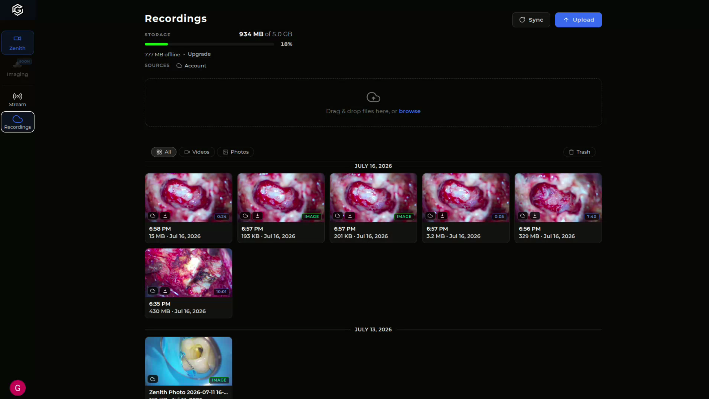

Guide: o lugar único de cada paciente
Imagens, vídeos, prontuário e planejamento cirúrgico no mesmo endereço — acessível de onde você estiver.

O Guide é a plataforma em nuvem da BMT. Tudo que o Zenith captura e tudo que você planeja no Orion One chega organizado por paciente, junto do histórico clínico. Em vez de imagens espalhadas por pendrives, celulares e computadores da clínica, cada caso tem um endereço só — e ele abre em qualquer navegador.
Um Prontuário por Paciente
Vídeos, fotos, exames e anotações no mesmo caso clínico. Encontre o procedimento de meses atrás em segundos, sem caçar arquivo.
Planejamento por Imagem
Meça, marque ângulos, desenhe contornos e segmente estruturas antes de entrar na sala — as mesmas ferramentas usadas no fluxo do Orion One.
Acesso de Qualquer Lugar
Roda no navegador. Reveja um caso de casa, mostre a evolução para o tutor no consultório ou discuta com um colega de outra cidade.
Toda a sua casuística em um lugar só.
Já é cliente BMT? Agende uma demonstração com nossa equipe e garanta acesso antecipado.